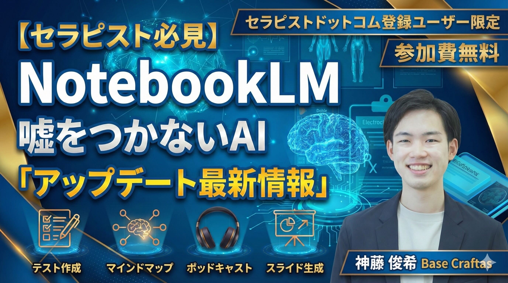
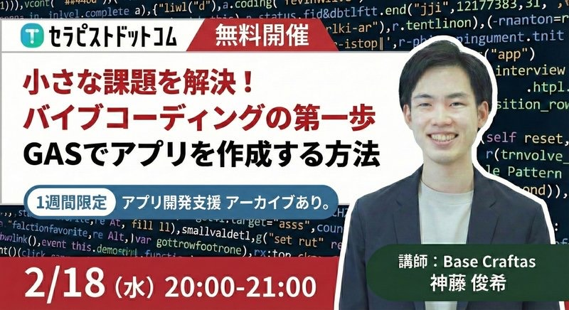

AI Seminar
1回の訪問で、臨床と学びを現場に残す。
医療・介護現場に入り、臨床支援・研修・AI活用・業務改善のきっかけを届けます。

理学療法士として実際に現場に入り、患者さんへのアプローチや評価・ケアプランの整理をサポートします。
AI活用・SNS発信・業務改善など、現場のニーズに合わせたカスタム研修を提供します。
現場を直接見ながら、紙業務・情報共有・ツール活用の改善ポイントを整理し提案します。

従業員のAI活用を推進したいが、何から始めるべきかわからない
職場全体でAIを活用し、情報共有や教育の仕組みを整えたい
スタッフの学びや参加感を増やし、エンゲージメントを高めたい
セラピストの診療報酬外でのマネタイズ導線をつくりたい
外部の専門的な目線で現状を整理してほしい
Craft Shiftは、理学療法士でもある神藤 俊希が医療・介護現場に直接訪問し、臨床支援・研修・業務改善を行うスポット型支援サービスです。単なる非常勤補充ではなく、現場に「変化のきっかけ」を残すことを目的としています。

Craft Shiftでは、現場訪問に加えて、Google Workspace・GAS・NotebookLMを活用した業務改善や教育システムづくり、発信設計・マネタイズ設計まで個別に支援します。

スプレッドシート、フォーム、Gmail、カレンダーなどをつなぎ、現場の申請・管理・集計・通知を軽量なWebアプリとして整えます。
マニュアル、研修資料、院内ルール、FAQをNotebookLMに整理し、スタッフが必要な情報へすぐアクセスできる学習環境をつくります。
専門性やサービス価値を言語化し、SNS・LP・導線・商品設計まで整理。単発相談から実行伴走まで、目的に合わせて設計します。
医療職・セラピスト向けに、AI活用、NotebookLM、GASによるアプリ作成、キャリア設計などの実践型セミナーを行っています。





毎週土曜日の朝6:00に、医療職向けのAI活用勉強会を開催。AIニュース、現場での活用方法、次週の仕事に活かす実践ポイントを整理しています。

交通費別途 / 料金は事前にお見積もりします。
【医療免責】
Craft Shiftは診療行為・医療行為を提供するサービスではありません。理学療法士の専門知識に基づく現場支援・研修・業務改善支援として提供されます。